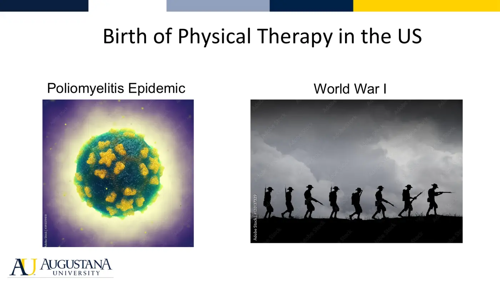
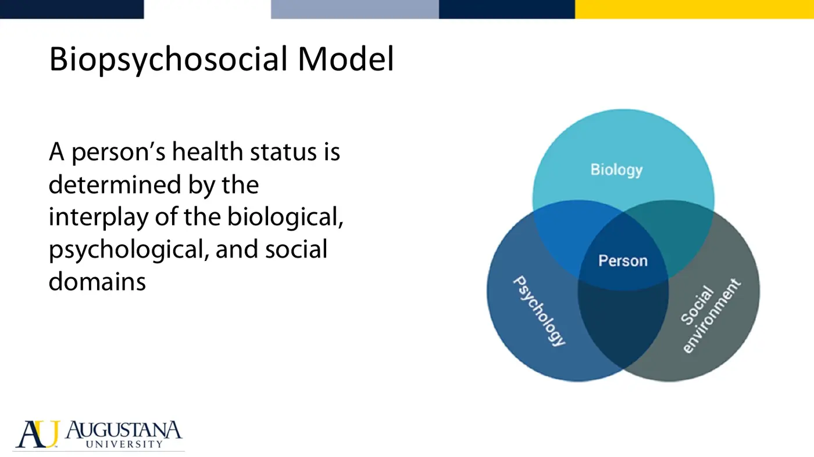
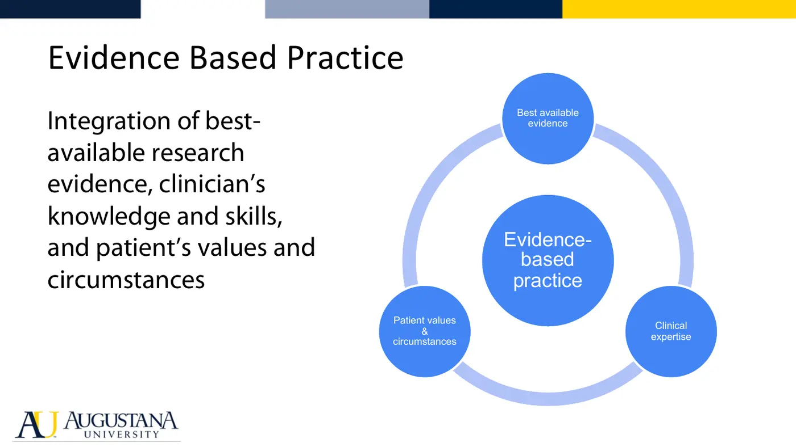
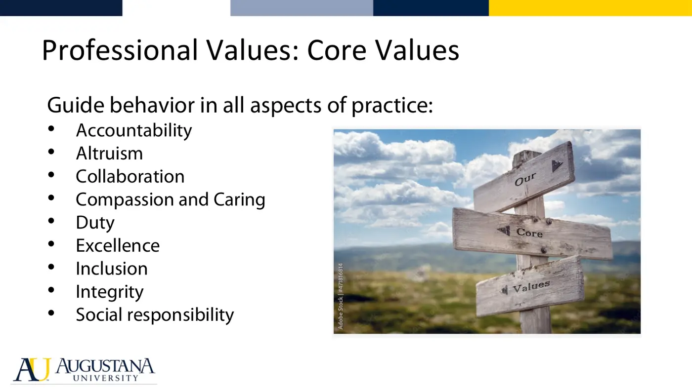
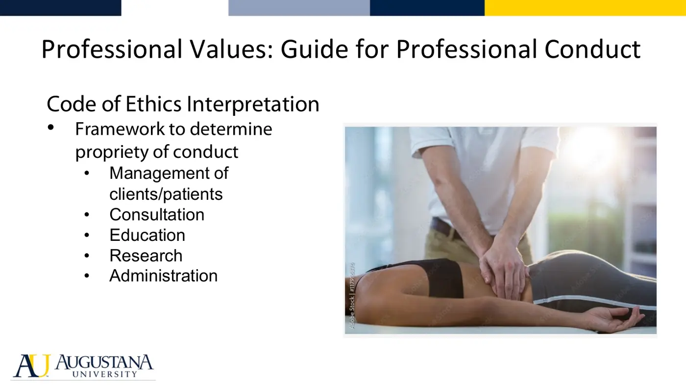
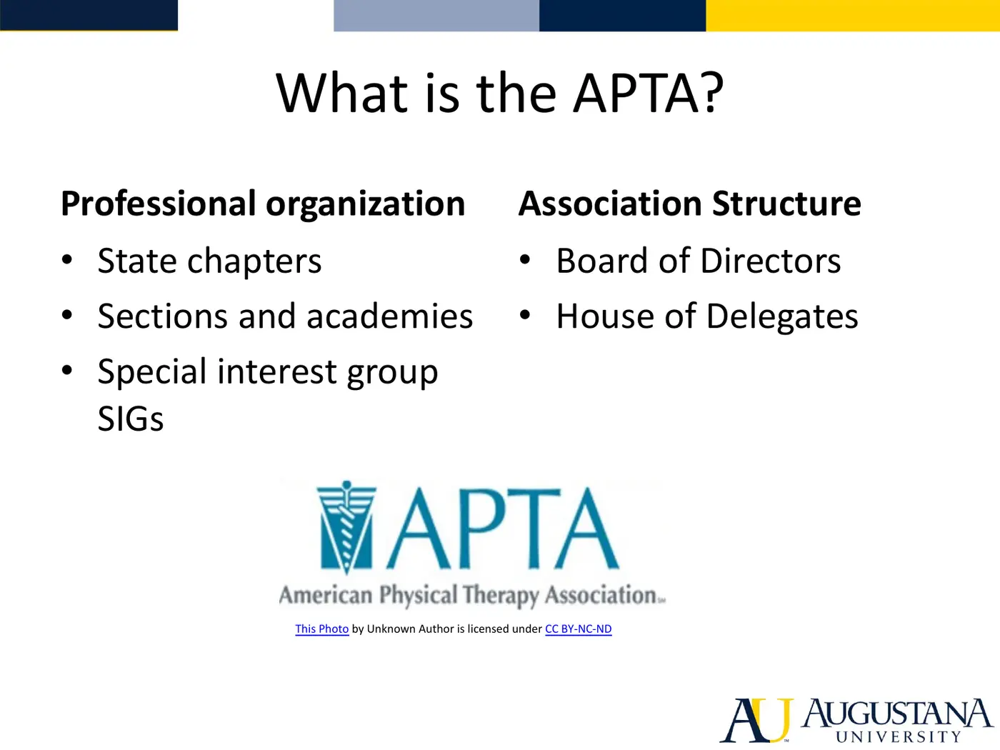
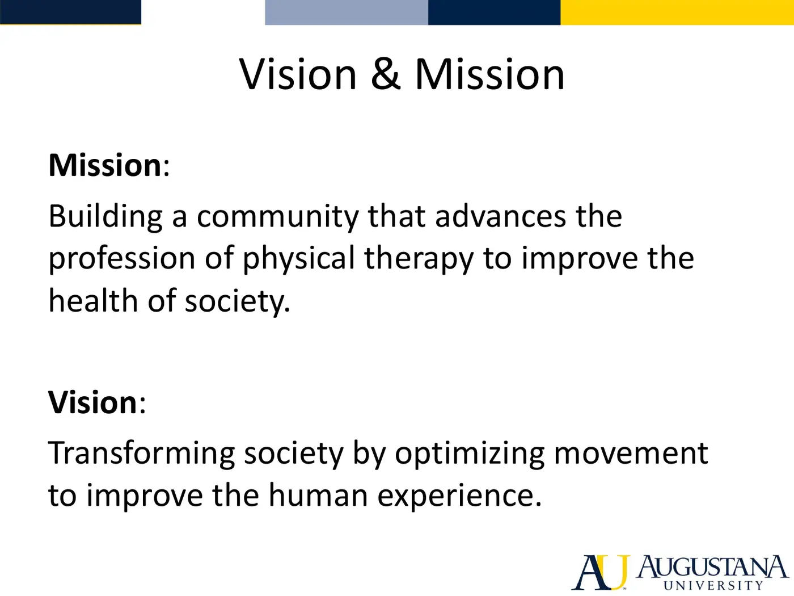

Courses › Professional Competencies I › Module 1
Professional Competencies I · 6811
Module 1 — What is Physical Therapy?
Topics: 1.1 What is a Physical Therapist? • 1.2 The APTA • Sync Session 1
📖 How to Use These Notes
- Best used with the lecture playing — keep these open, follow along, and add your own notes as you watch
- Lecture banners mark the start of each topic and run in the same order as the videos
- 🎙 Callouts = direct insights from the instructor's transcript
- ★ Tips = exam-relevant content or things the instructor told you to prepare
- Figures are taken directly from the module's slide decks
- Each topic ends with its own Quick-Reference Glossary
- Written from last year's recordings — if a lecture has been re-recorded or resequenced, Canvas wins
- Watch this module's lecture videos in your own Canvas module — video links are cohort-specific
TOPIC 1.1
What is a Physical Therapist? — The Rise to a Doctoring Profession
1. Who PTs Are and What They Do
- PTs are health professionals who diagnose and manage movement dysfunction as it relates to restoring, maintaining, and promoting optimal physical function, health, and well-being of individuals, families, and communities — with distinct knowledge of purposeful, precise, efficient movement across the lifespan.
- In a nutshell: design and implement a customized, integrated plan of care based on diagnosis, prognosis, and the patient's goals, in collaboration with the patient, family, caregivers, and other professionals — emphasizing movement-related interventions.
2. History — Born of Polio and War

- PT was officially recognized during World War I, when female civilian employees of the US Army — the reconstruction aides — rehabilitated injured soldiers with exercise, massage, hydrotherapy, modalities, and adaptive equipment training.
- Polio: first US case 1893; first major outbreak 1916. Quarantine and prolonged bed rest caused atrophy, ROM and flexibility loss — exactly what PT addresses. Epidemics raged through the 1930s–50s until the 1955 polio (Salk) vaccine virtually eradicated the disease, freeing the profession to focus on stroke, cerebral palsy, and other conditions. [Transcript reads "soft vaccine" — Salk vaccine.]
- WWII — penicillin and surgical advances meant many more survivors with amputations, burns, wounds, head and spinal cord injuries; veteran care dominated practice through Korea and Vietnam.
- 1960s–70s: open-heart surgery and joint replacement expanded orthopedic and cardiopulmonary roles. 1967: Congress added PT private practice to Medicare/Medicaid. 1972: PTs gained independent billing under Medicare Part B. 1970s–80s: shift toward private practice.
- 1981–82: APTA House of Delegates adopted a direct access policy where legal. Today every state, DC, and the US Virgin Islands allow evaluation and some form of treatment without physician referral — with restrictions in some states; the profession lobbies for unrestricted access.
3. The Education Story
- Reconstruction aides trained in short programs → 1927 first Bachelor of Science program (NYU launched the first full four-year BS) → 1979 push for post-baccalaureate entry → master's programs → 1993, Creighton University: first entry-level DPT — still the standard.
- Post-graduate growth: 1985 first specialist certification exam (now 10 specialty areas); 1999 first credentialed residency (orthopedic manual therapy, Kaiser Permanente CA); now 380+ residencies and 45+ fellowships.
4. The Guide to PT Practice 4.0 and Four Frameworks
- The Guide describes PT practice for PTs, PTAs, educators, students, policymakers, and payers: guiding principles, description of practice, diagnostic framework, interventions, roles, career advancement, standardized terminology. Free online via APTA.

| Framework | The idea |
|---|---|
| Biopsychosocial model | Health = interplay of biology (disease/pathology), psychology (thoughts, emotions, behaviors, fear, coping), and social environment (economy, politics, culture, work, family). A condition is never just biology |
| ICF (WHO) | Functioning and disability as multidimensional: body functions/structures & impairments · activities & limitations · participation & restrictions · environmental and personal factors (detailed in Movement Science) |
| Social determinants of health | Non-medical conditions in which people are born, grow, work, live, age. Studies attribute 30–55% of health outcomes to SDOH — more than health care or lifestyle. PTs help identify and mitigate risks through activity, education, advocacy |
| Movement system | The six interacting systems (CV, pulmonary, endocrine, integumentary, nervous, MSK). PTs find the root cause of movement dysfunction across single or multiple systems |
5. Core Concepts of Practice

- Evidence-based practice = integrating current research evidence + clinical expertise + the patient's circumstances, values, and goals. You must be able to consume, appraise, and apply evidence.
- Quality in practice — care should be safe, effective, person-centered, timely, efficient, equitable, assessed continuously and systematically; quality indicators expose gaps and drive improvement.

- Core values (know all nine): accountability, altruism, collaboration, compassion and caring, duty, excellence, inclusion, integrity, social responsibility. Module 2 goes deep.

- Code of Ethics — House of Delegates document defining eight ethical principles, standards of behavior, guidance for ethical issues, education for stakeholders, and the standard for unethical conduct.
- Guide for Professional Conduct — interprets the Code across the PT's five roles: management of patients/clients, consultation, education, research, administration — and guides student professional development.
6. Roles Across Health Care Delivery
- PTs serve across the continuum and lifespan: prevention, early intervention, habilitation and rehabilitation, performance enhancement, risk reduction, palliative care — plus population health, wellness, and fitness.
- Beyond direct care: consultant, educator, researcher, administrator, business owner/entrepreneur. You'll build your own professional development plan later in this course.
Topic 1.1 — Quick-Reference Glossary
| Term | Definition |
|---|---|
| Reconstruction aides | WWI-era female Army employees — the predecessors of modern PTs |
| Direct access | Evaluation/treatment without physician referral; every state + DC + USVI allow some form |
| Guide to PT Practice 4.0 | APTA's description of practice, frameworks, and terminology |
| Biopsychosocial model | Health as biology × psychology × social environment |
| Social determinants of health | Non-medical conditions shaping health; 30–55% of outcomes |
| Movement system | Six body systems interacting to produce movement |
| Evidence-based practice | Research evidence + clinical expertise + patient values |
| Core values | Nine professional values guiding all PT behavior |
| Code of Ethics | Eight ethical principles adopted by the House of Delegates |
| Five roles of the PT | Management of patients/clients, consultation, education, research, administration |
| Entry-level DPT | Standard since Creighton's 1993 program |
TOPIC 1.2
The American Physical Therapy Association
1. What the APTA Is

- Founded 1921 by the women who served those returning from war. Today: an individual-membership, not-for-profit professional organization of 100,000+ PTs, PTAs, and students; national headquarters in Alexandria, Virginia.
- Federated model: 51 chapters (50 states + DC) leading state-level advocacy and local networking; sections/academies for special-interest areas (neurology, orthopedics, acute care, private practice...) — some publish journals; special interest groups (SIGs), including student SIGs.
- Governance: the House of Delegates is the policymaking body — meets annually, elects national leaders including the Board of Directors (three-year terms) and nominating committee. The Board sets the national strategic plan.
2. Mission, Vision, Strategy

| Mission (the association's direction) | Vision (the profession's direction) |
|---|---|
| "Building a community that advances the profession of physical therapy to improve the health of society" | "Transforming society by optimizing movement to improve the human experience" — adopted 2013 |
- Eight guiding principles to achieve the vision: identity, quality, collaboration, value, innovation, consumer centricity, access and equity, advocacy.
- The strategic plan sets four-year priorities informed by member research — current goals include member value, sustainability of the profession, quality of care, and demand/access for PT.
3. Why Join, and How Students Get Involved
- Member benefits: advocacy voice, public awareness, national network, research access, APTA magazine, Learning Center courses, conference and merchandise discounts, scholarships, insurance access.
- Student pathways: student advocacy challenge, pre-written letters to legislators, Core Ambassador (one-year liaison role), Student Assembly Project Committee and Student Assembly Board of Directors, chapter/section student SIGs, conference volunteering (CSM, House of Delegates usher), PT Day of Service every October, social media, monthly newsletter, monthly Facebook Live chats.
Topic 1.2 — Quick-Reference Glossary
| Term | Definition |
|---|---|
| APTA | National professional organization, founded 1921, 100,000+ members, HQ Alexandria VA |
| Chapters | 51 state-level units leading local advocacy and networking |
| Sections / academies | Special-interest bodies (neurology, ortho, acute care...) with journals, courses, conferences |
| SIG | Special interest group — includes student SIGs |
| House of Delegates | Annual policymaking body; elects the Board |
| Board of Directors | Elected leadership, three-year terms; sets the strategic plan |
| Mission vs vision | Association's direction vs profession's aspiration (adopted 2013) |
| Guiding principles | Identity, quality, collaboration, value, innovation, consumer centricity, access & equity, advocacy |
| Core Ambassador | Student liaison between APTA, Student Assembly, and state students |
| PT Day of Service | October — the profession's global service day |
MODULE 1
Sync Session 1 — Course Launch & Learning How to Learn
- Course rhythm: sync sessions run with Modules 1, 3, 5, 7, 9, 13. Assignments build toward: understanding the profession's history/values/scope, growing into the professional-student role, study habits, a professional development and career plan, and clinical-rotation accountability.
- Metacognition — thinking about your own thinking: monitor, plan, and control your mental processing; judge your level of learning accurately. The vowel-counting vs recall class activity demonstrates that attention directed at the wrong level produces poor memory — study for meaning, not mechanics.
▶ Required watching & reading (from the Canvas pages)
- The History of Physical Therapy Practice in the US (video, ~25 min — Augustana library login) — Topic 1.1 assigned watching
- APTA Centennial: 100 Milestones of Physical Therapy — Topic 1.1
- About the APTA — Topic 1.2 assigned reading
- APTA membership benefits — Topic 1.2 assigned reading
- APTA for Students — Topic 1.2 assigned reading
- Student leadership & involvement — Topic 1.2 assigned reading